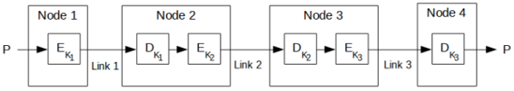
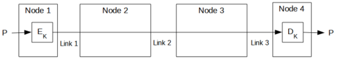
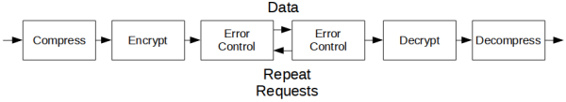

Think of security — data security, communications security, information security, whatever — as a chain. The security of the entire system is only as strong as the weakest link. Everything has to be secure: cryptographic algorithms, protocols, key management, and more. If your algorithms are great but your random-number generator stinks, any smart cryptanalyst is going to attack your system through the random-number generation. If you patch that hole but forget to securely erase a memory location that contains the key, a cryptanalyst will break your system via that route. If you do everything right and accidentally e-mail a copy of your secure files to The Wall Street Journal, you might as well not have bothered.
It’s not fair. As the designer of a secure system, you have to think of every possible means of attack and protect against them all, but a cryptanalyst only has to find one hole in your security and exploit it.
Cryptography is only a part of security, and often a very small part. It is the mathematics of making a system secure, which is different from actually making a system secure. Cryptography has its “size queens”: people who spend so much time arguing about how long a key should be that they forget about everything else. If the secret police want to know what is on your computer, it is far easier for them to break into your house and install a camera that can record what is on your computer screen than it is for them to cryptanalze your hard drive.
Additionally, the traditional view of computer cryptography as “spy versus spy” technology is becoming increasingly inappropriate. Over 99 percent of the cryptography used in the world is not protecting military secrets; it’s in applications such as bank cards, pay-TV, road tolls, office building and computer access tokens, lottery terminals, and prepayment electricity meters [43,44]. In these applications, the role of cryptography is to make petty crime slightly more difficult; the paradigm of the well-funded adversary with a rabbit warren of cryptanalysts and roomsful of computers just doesn’t apply.
Most of those applications have used lousy cryptography, but successful attacks against them had nothing to do with cryptanalysis. They involved crooked employees, clever sting operations, stupid implementations, integration blunders, and random idiocies. (I strongly recommend Ross Anderson’s paper, “Why Cryptosytems Fail” [44]; it should be required reading for anyone involved in this field.) Even the NSA has admitted that most security failures in its area of interest are due to failures in implementation, and not failures in algorithms or protocols [1119]. In these instances it didn’t matter how good the cryptography was; the successful attacks bypassed it completely.
When it comes to evaluating and choosing algorithms, people have several alternatives:
Any of these alternatives is problematic, but the first seems to be the most sensible. Putting your trust in a single manufacturer, consultant, or government is asking for trouble. Most people who call themselves security consultants (even those from big-name firms) usually don’t know anything about encryption. Most security product manufacturers are no better. The NSA has some of the world’s best cryptographers working for it, but they’re not telling all they know. They have their own interests to further which are not congruent with those of their citizens. And even if you’re a genius, writing your own algorithm and then using it without any peer review is just plain foolish.
The algorithms in this book are public. Most have appeared in the open literature and many have been cryptanalyzed by experts in the field. I list all published results, both positive and negative. I don’t have access to the cryptanalysis done by any of the myriad military security organizations in the world (which are probably better than the academic institutions — they’ve been doing it longer and are better funded), so it is possible that these algorithms are easier to break than it appears. Even so, it is far more likely that they are more secure than an algorithm designed and implemented in secret in some corporate basement.
The hole in all this reasoning is that we don’t know the abilities of the various military cryptanalysis organizations.
What algorithms can the NSA break? For the majority of us, there’s really no way of knowing. If you are arrested with a DES-encrypted computer hard drive, the FBI is unlikely to introduce the decrypted plaintext at your trial; the fact that they can break an algorithm is often a bigger secret than any information that is recovered. During WWII, the Allies were forbidden from using decrypted German Ultra traffic unless they could have plausibly gotten the information elsewhere. The only way to get the NSA to admit to the ability to break a given algorithm is to encrypt something so valuable that its public dissemination is worth the admission. Or, better yet, create a really funny joke and send it via encrypted e-mail to shady characters in shadowy countries. NSA employees are people, too; I doubt even they can keep a good joke secret.
A good working assumption is that the NSA can read any message that it chooses, but that it cannot read all messages that it chooses. The NSA is limited by resources, and has to pick and choose among its various targets. Another good assumption is that they prefer breaking knuckles to breaking codes; this preference is so strong that they will only resort to breaking codes when they wish to preserve the secret that they have read the message.
In any case, the best most of us can do is to choose among public algorithms that have withstood a reasonable amount of public scrutiny and cryptanalysis.
Algorithms for export out of the United States must be approved by the U.S. government (actually, by the NSA — see Section 25.1). It is widely believed that these export-approved algorithms can be broken by the NSA. Although no one has admitted this on the record, these are some of the things the NSA is rumored to privately suggest to companies wishing to export their cryptographic products:
NSA gets a copy of the source code, but the algorithm’s details remain secret from everyone else. Certainly no one advertises any of these deliberate weaknesses, but beware if you buy a U.S. encryption product that has been approved for export.
Which is better, public-key cryptography or symmetric cryptography? This question doesn’t make any sense, but has been debated since public-key cryptography was invented. The debate assumes that the two types of cryptography can be compared on an equal footing. They can’t.
Needham and Schroeder [1159] pointed out that the number and length of messages are far greater with public-key algorithms than with symmetric algorithms. Their conclusion was that the symmetric algorithm was more efficient than the public-key algorithm. While true, this analysis overlooks the significant security benefits of public-key cryptography.
Whitfield Diffie writes [492,494]:
In viewing public-key cryptography as a new form of cryptosystem rather than a new form of key management, I set the stage for criticism on grounds of both security and performance. Opponents were quick to point out that the RSA system ran about one-thousandth as fast as DES and required keys about ten times as large. Although it had been obvious from the beginning that the use of public key systems could be limited to exchanging keys for conventional [symmetric] cryptography, it was not immediately clear that this was necessary. In this context, the proposal to build hybrid systems [879] was hailed as a discovery in its own right.
Public-key cryptography and symmetric cryptography are different sorts of animals; they solve different sorts of problems. Symmetric cryptography is best for encrypting data. It is orders of magnitude faster and is not susceptible to chosen-ciphertext attacks. Public-key cryptography can do things that symmetric cryptography can’t; it is best for key management and a myriad of protocols discussed in Part I.
Other primitives were discussed in Part I: one-way hash functions, message authentication codes, and so on. Table 10.1 lists different types of algorithms and their properties [804].
| Algorithm | Confidentiality | Authentication | Integrity | Key Management |
|---|---|---|---|---|
| Symmetric encryption algorithms | Yes | No | No | Yes |
| Public-key encryption algorithms | Yes | No | No | Yes |
| Digital signature algorithms | No | Yes | Yes | No |
| Key-agreement algorithms | Yes | Optional | No | Yes |
| One-way hash functions | No | No | Yes | No |
| Message authentication codes | No | Yes | Yes | No |
This is the classic Alice and Bob problem: Alice wants to send Bob a secure message. What does she do? She encrypts the message.
In theory, this encryption can take place at any layer in the OSI (Open Systems Interconnect) communications model. (See the OSI security architecture standard for more information [305].) In practice, it takes place either at the lowest layers (one and two) or at higher layers. If it takes place at the lowest layers, it is called link-by-link encryption; everything going through a particular data link is encrypted. If it takes place at higher layers, it is called end-to-end encryption; the data are encrypted selectively and stay encrypted until they are decrypted by the intended final recipient. Each approach has its own benefits and drawbacks.
The easiest place to add encryption is at the physical layer (see Figure 10.1). This is called link-by-link encryption. The interfaces to the physical layer are generally standardized and it is easy to connect hardware encryption devices at this point. These devices encrypt all data passing through them, including data, routing information, and protocol information. They can be used on any type of digital communication link. On the other hand, any intelligent switching or storing nodes between the sender and the receiver need to decrypt the data stream before processing it.

Figure 10.1 Link encryption.
This type of encryption is very effective. Because everything is encrypted, a cryptanalyst can get no information about the structure of the information. He has no idea who is talking to whom, how long the messages they are sending are, what times of day they communicate, and so on. This is called traffic-flow security: the enemy is not only denied access to the information, but also access to the knowledge of where and how much information is flowing.
Security does not depend on any traffic management techniques. Key management is also simple; only the two endpoints of the line need a common key, and they can change their key independently from the rest of the network.
Imagine a synchronous communications line, encrypted using 1-bit CFB. After initialization, the line can run indefinitely, recovering automatically from bit or synchronization errors. The line encrypts whenever messages are sent from one end to the other; otherwise it just encrypts and decrypts random data. Eve has no idea when messages are being sent and when they are not; she has no idea when messages begin and end. All she sees is an endless stream of random-looking bits.
If the communications line is asynchronous, the same 1-bit CFB mode can be used. The difference is that the adversary can get information about the rate of transmission. If this information must be concealed, make some provision for passing dummy messages during idle times.
The biggest problem with encryption at the physical layer is that each physical link in the network needs to be encrypted: Leaving any link unencrypted jeopardizes the security of the entire network. If the network is large, the cost may quickly become prohibitive for this kind of encryption.
Additionally, every node in the network must be protected, since it processes unencrypted data. If all the network’s users trust one another, and all nodes are in secure locations, this may be tolerable. But this is unlikely. Even in a single corporation, information might have to be kept secret within a department. If the network accidentally misroutes information, anyone can read it. Table 10.2 summarizes the pros and cons of link-by-link encryption.
Table 10.2 - Link-by-Link Encryption: Advantages and Disadvantages
Advantages:
Easier operation, since it can be made transparent to the user. That is, everything is encrypted before being sent over the link.
Only one set of keys per link is required.
Provides traffic-flow security, since any routing information is encrypted.
Encryption is online.
Disadvantages:
Data is exposed in the intermediate nodes.
Another approach is to put encryption equipment between the network layer and the transport layer. The encryption device must understand the data according to the protocols up to layer three and encrypt only the transport data units, which are then recombined with the unencrypted routing information and sent to lower layers for transmission.
This approach avoids the encryption/decryption problem at the physical layer. By providing end-to-end encryption, the data remains encrypted until it reaches its final destination (see Figure 10.2). The primary problem with end-to-end encryption is that the routing information for the data is not encrypted; a good cryptanalyst can learn much from who is talking to whom, at what times and for how long, without ever knowing the contents of those conversations. Key management is also more difficult, since individual users must make sure they have common keys.

Figure 10.2 End-to-end encryption.
Building end-to-end encryption equipment is difficult. Each particular communications system has its own protocols. Sometimes the interfaces between the levels are not well-defined, making the task even more difficult.
If encryption takes place at a high layer of the communications architecture, like the applications layer or the presentation layer, then it can be independent of the type of communication network used. It is still end-to-end encryption, but the encryption implementation does not have to bother about line codes, synchronization between modems, physical interfaces, and so forth. In the early days of electromechanical cryptography, encryption and decryption took place entirely offline; this is only one step removed from that.
Encryption at these high layers interacts with the user software. This software is different for different computer architectures, and so the encryption must be optimized for different computer systems. Encryption can occur in the software itself or in specialized hardware. In the latter case, the computer will send the data to the specialized hardware for encryption before sending it to lower layers of the communication architecture for transmission. This process requires some intelligence and is not suitable for dumb terminals. Additionally, there may be compatibility problems with different types of computers.
The major disadvantage of end-to-end encryption is that it allows traffic analysis. Traffic analysis is the analysis of encrypted messages: where they come from, where they go to, how long they are, when they are sent, how frequent or infrequent they are, whether they coincide with outside events like meetings, and more. A lot of good information is buried in that data, and a cryptanalyst will want to get his hands on it. Table 10.3 presents the positive and negative aspects of end-to-end encryption.
Table 10.3 - End-to-End Encryption: Advantages and Disadvantages
Advantages:
Higher secrecy level.
Disadvantages:
Requires a more complex key-management system.
Traffic analysis is possible, since routing information is not encrypted.
Encryption is offline.
Table 10.4, primarily from [1244], compares link-by-link and end-to-end encryption. Combining the two, while most expensive, is the most effective way of securing a network. Encryption of each physical link makes any analysis of the routing information impossible, while end-to-end encryption reduces the threat of unencrypted data at the various nodes in the network. Key management for the two schemes can be completely separate: The network managers can take care of encryption at the physical level, while the individual users have responsibility for end-to-end encryption.
| Link-by-link encryption | End-to-end encryption |
|---|---|
| Security within Hosts | |
| Message exposed in sending host | Message encrypted in sending host |
| Message exposed in intermediate nodes | Message encrypted inintermediate nodes |
| Role of User | |
| Applied by sending host | Applied by sending process |
| Invisible to user | User applies encryption |
| Host maintains encryption | User must find algorithm |
| One facility for all users | User selects encryption |
| Can be done in hardware | More easily done in software |
| All or no messages encrypted | User chooses to encrypt or not, for each message |
| Implementation Concerns | |
| Requires one key per host pair | Requires one key per user pair |
| Requires encryption hardware or software at each host | Requires encryption hardware or software at each node |
| Provides node authentication | Provides user authentication |
Encrypting data for storage and later retrieval can also be thought of in the Alice and Bob model. Alice is still sending a message to Bob, but in this case “Bob” is Alice at some future time. However, the problem is fundamentally different.
In communications channels, messages in transit have no intrinsic value. If Bob doesn’t receive a particular message, Alice can always resend it. This is not true for data encrypted for storage. If Alice can’t decrypt her message, she can’t go back in time and re-encrypt it. She has lost it forever. This means that encryption applications for data storage should have some mechanisms to prevent unrecoverable errors from creeping into the ciphertext.
The encryption key has the same value as the message, only it is smaller. In effect, cryptography converts large secrets into smaller ones. Being smaller, they can be easily lost. Key management procedures should assume that the same keys will be used again and again, and that data may sit on a disk for years before being decrypted.
Furthermore, the keys will be around for a long time. A key used on a communications link should, ideally, exist only for the length of the communication. A key used for data storage might be needed for years, and hence must be stored securely for years.
Other problems particular to encrypting computer data for storage were listed in [357]:
If the encrypted files are not structured as records and fields, such as text files, retrieval is easier: The entire file is decrypted before use. If the encrypted files are database files, this solution is problematic. Decrypting the entire database to access a single record is inefficient, but encrypting records independently might be susceptible to a block-replay kind of attack.
In addition, you must make sure the unencrypted file is erased after encryption (see Section 10.9). For further details and insights, consult [425,569].
When encrypting a large hard drive, you have two options. You can encrypt all the data using a single key. This gives a cryptanalyst a large amount of ciphertext to analyze and makes it impossible to allow multiple users to see only parts of the drive. Or, you can encrypt each file with a different key, forcing users to memorize a different key for each file.
The solution is to encrypt each file with a separate key, and to encrypt the keys with another key known by the users. Each user only has to remember that one key. Different users can have different subsets of the file-encryption keys encrypted with their key. And there can even be a master key under which every file-encryption key is encrypted. This is even more secure because the file-encryption keys are random and less susceptible to a dictionary attack.
There are two ways to encrypt a hard drive: at the file level and at the driver level. Encryption at the file level means that every file is encrypted separately. To use a file that’s been encrypted, you must first decrypt the file, then use it, and then re-encrypt it.
Driver-level encryption maintains a logical drive on the user’s machine that has all data on it encrypted. If done well, this can provide security that, beyond choosing good passwords, requires little worry on the part of the user. The driver must be considerably more complex than a simple file-encryption program, however, because it must deal with the issues of being an installed device driver, allocation of new sectors to files, recycling of old sectors from files, random-access read and update requests for any data on the logical disk, and so on.
Typically, the driver prompts the user for a password before starting up. This is used to generate the master decryption key, which may then be used to decrypt actual decryption keys used on different data.
Most systems expect to be able to access individual disk sectors randomly. This adds some complication for using many stream ciphers and block ciphers in any chaining mode. Several solutions are possible.
Use the sector address to generate a unique IV for each sector being encrypted or decrypted. The drawback is that each sector will always be encrypted with the same IV. Make sure this is not a security problem.
For the master key, generate a pseudo-random block as large as one sector. (You can do this by running an algorithm in OFB mode, for example.) To encrypt any sector, first XOR in this pseudo-random block, then encrypt normally with a block cipher in ECB mode. This is called ECB+OFB (see Section 15.4).
Since CBC and CFB are error-recovering modes, you can use all but the first block or two in the sector to generate the IV for that sector. For example, the IV for sector 3001 may be the hash of the all but the first 128 bits of the sector’s data. After generating the IV, encrypt normally in CBC mode. To decrypt the sector, you use the second 64-bit block of the sector as an IV, and decrypt the remainder of the sector. Then, using the decrypted data, you regenerate the IV and decrypt the first 128 bits.
You can use a block cipher with a large enough block size that it can encrypt the whole sector at once. Crab (see Section 14.6) is an example.
Until very recently, all encryption products were in the form of specialized hardware. These encryption/decryption boxes plugged into a communications line and encrypted all the data going across that line. Although software encryption is becoming more prevalent today, hardware is still the embodiment of choice for military and serious commercial applications. The NSA, for example, only authorizes encryption in hardware. There are several reasons why this is so.
| File-Level Encryption | Driver-Level Encryption |
|---|---|
| Benefits: | |
|
Ease of implementation and use. Flexible. Relatively small performance penalty. Users can move files between different machines without problems. Users can back files up without problems. |
Temporary files, work files, and so forth can be kept on the secure drive. It’s harder to forget to re-encrypt something on this kind of system. |
| Security Issues: | |
|
Potential leakage through security-unconscious programs. (Program a device-driver or may write file to disk for temporary storage, for example.) Bad implementations may always re-encrypt with same key for same password. |
Lots of things can go wrong with memory-resident program. Bad implementations will allow chosen-plaintext, or even chosen-ciphertext attacks. If whole system is master-keyed under one password, loss of that password means that the attacker gets everything. A more limited set of ciphers can reasonably be used for this kind of application. For example, OFB stream ciphers would not work. |
| Usability Problems: | |
|
User has to figure out what to do. There may be different passwords for different files. Manual encryption of selected files is the only access control. |
There will be a performance penalty. The driver may interact in weird ways with Windows, OS/2 DOS emulation, device drivers, and so on. |
The first is speed. As we will see in Part III, encryption algorithms consist of many complicated operations on plaintext bits. These are not the sorts of operations that are built into your run-of-the-mill computer. The two most common encryption algorithms, DES and RSA, run inefficiently on general-purpose processors. While some cryptographers have tried to make their algorithms more suitable for software implementation, specialized hardware will always win a speed race.
Additionally, encryption is often a computation-intensive task. Tying up the computer’s primary processor for this is inefficient. Moving encryption to another chip, even if that chip is just another processor, makes the whole system faster.
The second reason is security. An encryption algorithm running on a generalized computer has no physical protection. Mallory can go in with various debugging tools and surreptitiously modify the algorithm without anyone ever realizing it. Hardware encryption devices can be securely encapsulated to prevent this. Tamperproof boxes can prevent someone from modifying a hardware encryption device. Special-purpose VLSI chips can be coated with a chemical such that any attempt to access their interior will result in the destruction of the chip’s logic. The U.S. government’s Clipper and Capstone chips (see Sections 24.16 and 24.17) are designed to be tamperproof. The chips can be designed so that it is impossible for Mallory to read the unencrypted key.
IBM developed a cryptographic system for encrypting data and communications on mainframe computers [515,1027]. It includes tamper-resistant modules to hold keys. This system is discussed in Section 24.1.
Electromagnetic radiation can sometimes reveal what is going on inside a piece of electronic equipment. Dedicated encryption boxes can be shielded, so that they leak no compromising information. General-purpose computers can be shielded as well, but it is a far more complex problem. The U.S. military calls this TEMPEST; it’s a subject well beyond the scope of this book.
The final reason for the prevalence of hardware is the ease of installation. Most encryption applications don’t involve general-purpose computers. People may wish to encrypt their telephone conversations, facsimile transmissions, or data links. It is cheaper to put special-purpose encryption hardware in the telephones, facsimile machines, and modems than it is to put in a microprocessor and software.
Even when the encrypted data comes from a computer, it is easier to install a dedicated hardware encryption device than it is to modify the computer’s system software. Encryption should be invisible; it should not hamper the user. The only way to do this in software is to write encryption deep into the operating system. This isn’t easy. On the other hand, even a computer neophyte can plug an encryption box between his computer and his external modem.
The three basic kinds of encryption hardware on the market today are: self-contained encryption modules (that perform functions such as password verification and key management for banks), dedicated encryption boxes for communications links, and boards that plug into personal computers.
Some encryption boxes are designed for certain types of communications links, such as T-1 encryption boxes that are designed not to encrypt synchronization bits. There are different boxes for synchronous and asynchronous communications lines. Newer boxes tend to accept higher bit rates and are more versatile.
Even so, many of these devices have some incompatibilities. Buyers should be aware of this and be well-versed in their particular needs, lest they find themselves the owners of encryption equipment unable to perform the task at hand. Pay attention to restrictions in hardware type, operating system, applications software, network, and so forth.
PC-board encryptors usually encrypt everything written to the hard disk and can be configured to encrypt everything sent to the floppy disk and serial port as well. These boards are not shielded against electromagnetic radiation or physical interference, since there would be no benefit in protecting the boards if the computer remained unaffected.
More companies are starting to put encryption hardware into their communications equipment. Secure telephones, facsimile machines, and modems are all available.
Internal key management for these devices is generally secure, although there are as many different schemes as there are equipment vendors. Some schemes are more suited for one situation than another, and buyers should know what kind of key management is incorporated into the encryption box and what they are expected to provide themselves.
Any encryption algorithm can be implemented in software. The disadvantages are in speed, cost, and ease of modification (or manipulation). The advantages are in flexibility and portability, ease of use, and ease of upgrade. The algorithms written in C at the end of this book can be implemented, with little modification, on any computer. They can be inexpensively copied and installed on many machines. They can be incorporated into larger applications, such as communications programs or word processors.
Software encryption programs are popular and are available for all major operating systems. These are meant to protect individual files; the user generally has to manually encrypt and decrypt specific files. It is important that the key management scheme be secure: The keys should not be stored on disk anywhere (or even written to a place in memory from where the processor swaps out to disk). Keys and unencrypted files should be erased after encryption. Many programs are sloppy in this regard, and a user has to choose carefully.
Of course, Mallory can always replace the software encryption algorithm with something lousy. But for most users, that isn’t a problem. If Mallory can break into our office and modify our encryption program, he can also put a hidden camera on the wall, a wiretap on the telephone, and a TEMPEST detector down the street. If Mallory is that much more powerful than the user, the user has lost the game before it starts.
Using a data compression algorithm together with an encryption algorithm makes sense for two reasons:
Cryptanalysis relies on exploiting redundancies in the plaintext;
compressing a file before encryption reduces these redundancies.
Encryption is time-consuming; compressing a file before encryption
speeds up the entire process.
The important thing to remember is to compress before encryption. If the encryption algorithm is any good, the ciphertext will not be compressible; it will look like random data. (This makes a reasonable test of an encryption algorithm; if the ciphertext can be compressed, then the algorithm probably isn’t very good.)
If you are going to add any type of transmission encoding or error detection and recovery, remember to add that after encryption. If there is noise in the communications path, decryption’s error-extension properties will only make that noise worse. Figure 10.3 summarizes these steps.

Figure 10.3 Encryption with compression and error control.
How does Eve detect an encrypted file? Eve is in the spy business, so this is an important question. Imagine that she’s eavesdropping on a network where messages are flying in all directions at high speeds; she has to pick out the interesting ones. Encrypted files are certainly interesting, but how does she know they are encrypted?
Generally, she relies on the fact that most popular encryption programs have well-defined headers. Electronic-mail messages encrypted with either PEM or PGP (see Sections 24.10 and 24.12) are easy to identify for that reason.
Other file encryptors just produce a ciphertext file of seemingly random bits. How can she distinguish it from any other file of seemingly random bits? There is no sure way, but Eve can try a number of things:
Any file that cannot be compressed and is not already compressed is probably ciphertext. (Of course, it is possible to specifically make ciphertext that is compressible.) Identifying the algorithm is a whole lot harder. If the algorithm is good, you can’t. If the algorithm has some slight biases, it might be possible to recognize those biases in the file. However, the biases have to be pretty significant or the file has to be pretty big in order for this to work.
Alice and Bob have been sending encrypted messages to each other for the past year. Eve has been collecting them all, but she cannot decrypt any of them. Finally, the secret police tire of all this unreadable ciphertext and arrest the pair. “Give us your encryption keys,” they demand. Alice and Bob refuse, but then they notice the thumbscrews. What can they do?
Wouldn’t it be nice to be able to encrypt a file such that there are two possible decryptions, each with a different key. Alice could encrypt a real message to Bob in one of the keys and some innocuous message in the other key. If Alice were caught, she could surrender the key to the innocuous message and keep the real key secret.
The easiest way to do this is with one-time pads. Let P be the plaintext, D the dummy plaintext, C the ciphertext, K the real key, and K’ the dummy key. Alice encrypts P:
P ⊕ K = C
Alice and Bob share K, so Bob can decrypt C:
C ⊕ K = P
If the secret police ever force them to surrender their key, they don’t surrender K, but instead surrender:
K’ = C ⊕ D
The police then recover the dummy plaintext:
C ⊕ K’ = D
Since these are one-time pads and K is completely random, there is no way to prove that K’ was not the real key. To make matters more convincing, Alice and Bob should concoct some mildly incriminating dummy messages to take the place of the really incriminating real messages. A pair of Israeli spies once did this.
Alice could take P and encrypt it with her favorite algorithm and key K to get C. Then she takes C and XORs it with some piece of mundane plaintext — Pride and Prejudice for example, to get K’. She stores both C and the XOR on her hard disk. Now, when the secret police interrogate her, she can explain that she is an amateur cryptographer and that K’ is a merely one-time pad for C. The secret police might suspect something, but unless they know K they cannot prove that Alice’s explanation isn’t valid.
Another method is to encrypt P with a symmetric algorithm and K, and D with K’. Intertwine bits (or bytes) of the ciphertext to make the final ciphertexts. If the secret police demand the key, Alice gives them K’ and says that the alternating bits (or bytes) are random noise designed to frustrate cryptanalysis. The trouble is the explanation is so implausible that the secret police will probably not believe her (especially considering it is suggested in this book).
A better way is for Alice to create a dummy message, D, such that the concatenation of P and D, compressed, is about the same size as D. Call this concatenation P’. Alice then encrypts P’ with whatever algorithm she and Bob share to get C. Then she sends C to Bob. Bob decrypts C to get P’, and then P and D. Then they both compute C ⊕ D = K’. This K’ becomes the dummy one-time pad they use in case the secret police break their doors down. Alice has to transmit D so that hers and Bob’s alibis match.
Another method is for Alice to take an innocuous message and run it through some error-correcting code. Then she can introduce errors that correspond to the secret encrypted message. On the receiving end, Bob can extract the errors to reconstruct the secret message and decrypt it. He can also use the error-correcting code to recover the innocuous message. Alice and Bob might be hard pressed to explain to the secret police why they consistently get a 30 percent bit-error rate on an otherwise noise-free computer network, but in some circumstances this scheme can work.
Finally, Alice and Bob can use the subliminal channels in their digital signature algorithms (see Sections 4.2 and 23.3). This is undetectable, works great, but has the drawback of only allowing 20 or so characters of subliminal text to be sent per signed innocuous message. It really isn’t good for much more than sending keys.
When you delete a file on most computers, the file isn’t really deleted. The only thing deleted is an entry in the disk’s index file, telling the machine that the file is there. Many software vendors have made a fortune selling file-recovery software that recovers files after they have been deleted.
And there’s yet another worry: Virtual memory means your computer can read and write memory to disk any time. Even if you don’t save it, you never know when a sensitive document you are working on is shipped off to disk. This means that even if you never save your plaintext data, your computer might do it for you. And driver-level compression programs like Stacker and DoubleSpace can make it even harder to predict how and where information is stored on a disk.
To erase a file so that file-recovery software cannot read it, you have to physically write over all of the file’s bits on the disk. According to the National Computer Security Center [1148]:
Overwriting is a process by which unclassified data are written to storage locations that previously held sensitive data.... To purge the...storage media, the DoD requires overwriting with a pattern, then its complement, and finally with another pattern; e.g., overwrite first with 0011 0101, followed by 1100 1010, then 1001 0111. The number of times an overwrite must be accomplished depends on the storage media, sometimes on its sensitivity, and sometimes on different DoD component requirements. In any case, a purge is not complete until a final overwrite is made using unclassified data.
You may have to erase files or you may have to erase entire drives. You should also erase all unused space on your hard disk.
Most commercial programs that claim to implement the DoD standard overwrite three times: first with all ones, then with all zeros, and finally with a repeating one-zero pattern. Given my general level of paranoia, I recommend overwriting a deleted file seven times: the first time with all ones, the second time with all zeros, and five times with a cryptographically secure pseudo-random sequence. Recent developments at the National Institute of Standards and Technology with electron-tunneling microscopes suggest even that might not be enough. Honestly, if your data is sufficiently valuable, assume that it is impossible to erase data completely off magnetic media. Burn or shred the media; it’s cheaper to buy media new than to lose your secrets.